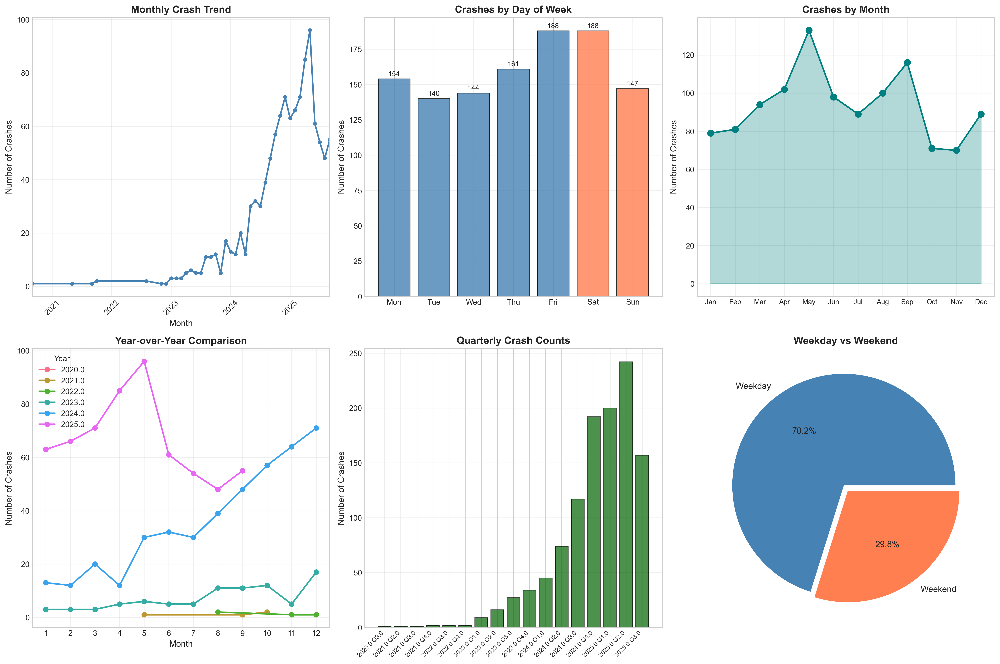
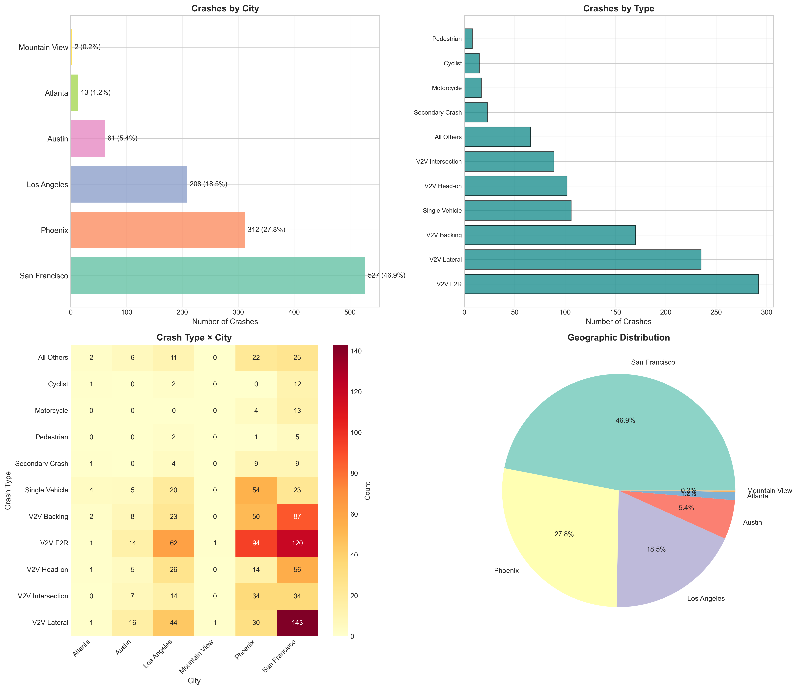
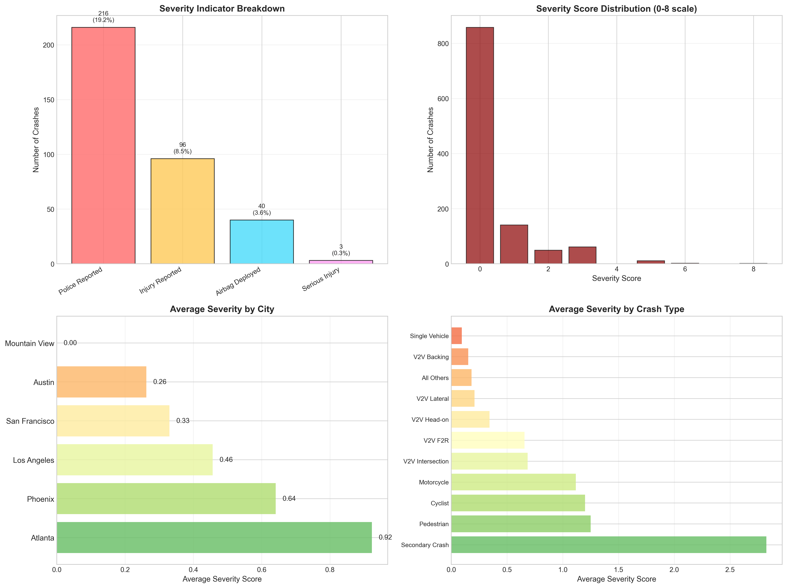
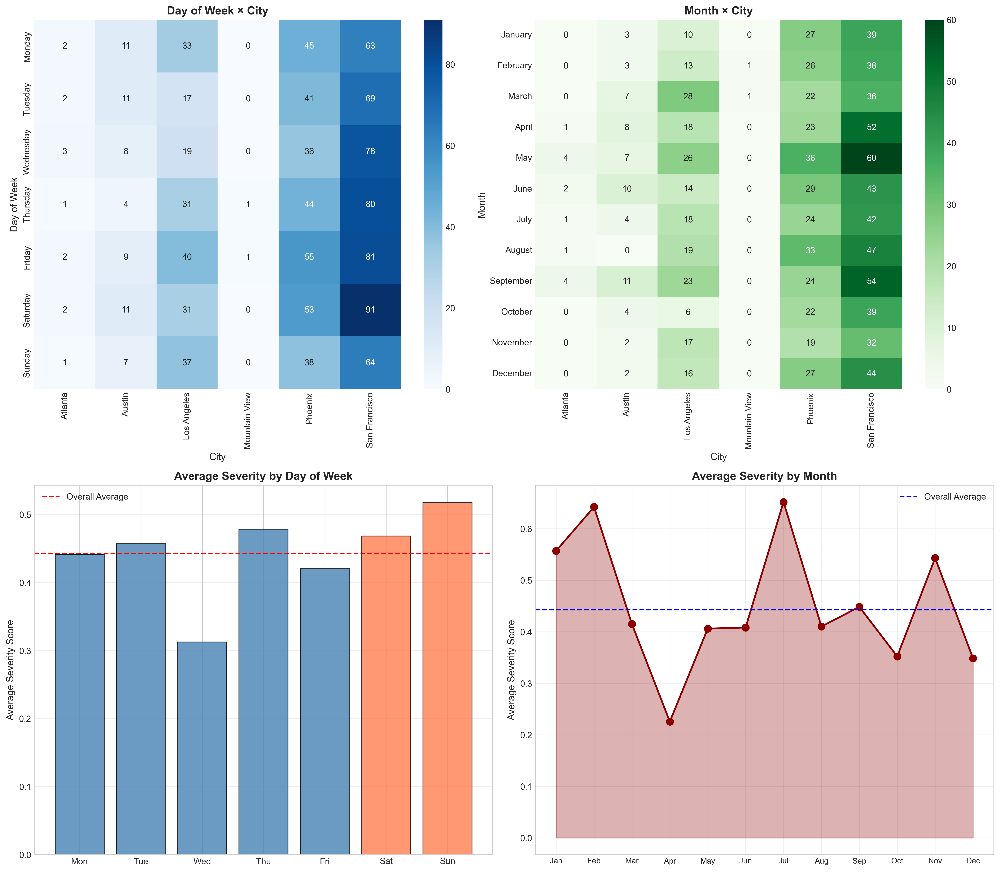
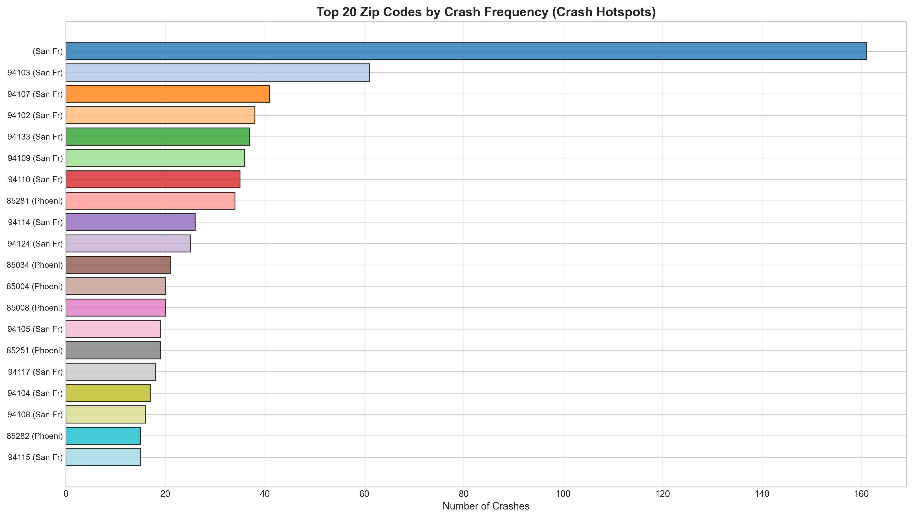

A comprehensive analysis of autonomous vehicle incidents across five major U.S. cities reveals patterns in timing, location, and severity.
Waymo operates autonomous vehicles in five major metropolitan areas across the United States: San Francisco, Phoenix, Los Angeles, Austin, and Atlanta.
1,350+ crashes analyzed
California hosts the majority of Waymo's operations, with San Francisco serving as the company's primary testing ground and commercial service area.
The Bay Area's complex urban environment presents unique challenges for autonomous vehicles.
With ~45% of all crashes, San Francisco provides the richest data for understanding autonomous vehicle safety patterns.
The city's dense streets, steep hills, and active pedestrian traffic create a demanding environment.
Click on the highlighted markers on the map to explore detailed crash reports from San Francisco's most active areas.
Or continue scrolling to see citywide patterns...
While individual incidents tell important stories, the aggregate data reveals systematic patterns in when, where, and how severe crashes occur.
Let's examine the broader trends...
Our analysis examines crash reports from Waymo's autonomous vehicle fleet, uncovering trends that inform the ongoing conversation about self-driving car safety.

Temporal patterns reveal that autonomous vehicle crashes follow predictable rhythms tied to traffic volume and human behavior.
Crash counts have increased over time, reflecting Waymo's expanding fleet and service areas rather than necessarily indicating decreased safety.
The growth trajectory follows the company's expansion milestones.
The vast majority of crashes occur on weekdays, correlating with higher traffic density and Waymo's commercial ride-hailing operations.
Weekend crashes: ~25% of total
Each successive year shows higher crash counts, mirroring fleet expansion. The key question is whether crash rates per mile driven are improving.

Geographic analysis reveals significant concentration in specific cities, with San Francisco and Phoenix accounting for the majority of incidents.
Distribution reflects Waymo's operational footprint, with longer-running markets showing more data.
V2V (Vehicle-to-Vehicle) collisions dominate the data, with rear-end and lateral impacts being most common.
Pedestrian and cyclist incidents, while less frequent, receive heightened scrutiny.
The heatmap reveals how crash types vary by location. Urban density in SF leads to more intersection-related incidents, while Phoenix sees more highway-style collisions.

The severity analysis provides crucial context: while crash counts may seem high, the vast majority result in minimal damage or injury.
We created a composite severity score (0-8) based on police involvement, injuries, and airbag deployment.
Most crashes score 0, indicating minimal severity.
As expected, pedestrian and head-on collisions show higher average severity scores, though they remain relatively rare.

Cross-referencing temporal, spatial, and severity data reveals nuanced patterns that inform where and when autonomous vehicles face the greatest challenges.
San Francisco shows consistent crash rates across all days, while Phoenix exhibits more weekday concentration.
This may reflect different use cases: commuter vs. leisure trips.
Interestingly, weekend crashes aren't necessarily less severe. The lower traffic volume may be offset by different driving patterns.
Seasonal effects also appear, potentially linked to weather conditions.
Certain zip codes show significantly higher crash frequencies, representing areas of concentrated Waymo activity and complex traffic conditions.

Crash data was compiled from Waymo's publicly reported incidents through the SGO (Standing General Order) reporting system, which requires manufacturers to report crashes involving autonomous vehicles to NHTSA.
Location coordinates were approximated using zip code centroids with small random offsets for visualization. City-level coordinates were used as fallbacks when zip codes were unavailable.
A composite severity score (0-8) was calculated from four binary indicators: police reported (+1), injury reported (+2), airbag deployment (+2), and serious injury (+3).
Crash locations are approximations based on zip codes. The analysis reflects reported incidents only and should be interpreted in context of Waymo's expanding fleet size and operational areas.